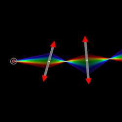
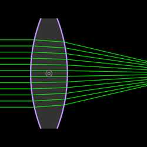
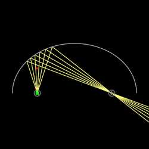
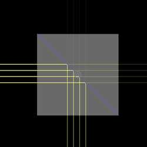

- ຄຸນສົມບັດ "ໂມດູນ" ອະນຸຍາດໃຫ້ສ້າງເຄື່ອງມືໃໝ່ໂດຍການລວມ, ການເຮັດໃຫ້ສະເພາະເຈາະຈົງ, ຫຼື ການກຳນົດຄ່າພາຣາມິເຕີໃໝ່ຂອງວັດຖຸທີ່ສ້າງຂຶ້ນໂດຍເຄື່ອງມືທີ່ມີຢູ່ແລ້ວໃນຕົວຈຳລອງນີ້.
- ໂມດູນທີ່ນຳເຂົ້າຈະປະກົດເປັນເຄື່ອງມືໃນໝວດໝູ່ "ອື່ນໆ". ກະລຸນາເລືອກ ແລະ ຄລິກໃສ່ບ່ອນວ່າງຕາມລຳດັບຂອງລຳດັບຈຸດຄວບຄຸມ (ເບິ່ງ "ຂໍ້ກຳນົດສະເພາະ").
- ໂມດູນທີ່ນຳເຂົ້າແມ່ນຖືກຝັງຢູ່ໃນຂໍ້ມູນຂອງສາກ, ດັ່ງນັ້ນຈະບໍ່ຖືກອັບເດດໂດຍອັດຕະໂນມັດເມື່ອຜູ້ຂຽນໂມດູນເຮັດການອັບເດດ.

ເລນເຟຣເນລ (Fresnel Lens) (FresnelLens)
Yi-Ting Tu
ເລນເຟຣເນລທີ່ເຮັດຈາກແກ້ວເຄິ່ງວົງມົນ. ເປັນເວີຊັນໂມດູນຂອງ ຕົວຢ່າງໃນຄັງຮູບພາບນີ້.- ຈຸດປາຍທຳອິດຂອງເລນ
- ຈຸດປາຍທີສອງຂອງເລນ
N_slice: ຈຳນວນຊິ້ນສ່ວນ (slices)refIndex: ດັດຊະນີຫັກເຫຂອງເລນ

ແຫຼ່ງກຳເນີດແສງສະເປກຕຳຕໍ່ເນື່ອງ (ContSpectrum)
Yi-Ting Tu
ແຫຼ່ງກຳເນີດແສງທີ່ມີສະເປກຕຳຕໍ່ເນື່ອງແບບສະໝ່ຳສະເໝີ ທີ່ຖືກແບ່ງເປັນຊ່ວງດ້ວຍຂັ້ນຕອນຄົງທີ່. ໃຊ້ໄດ້ສະເພາະຕອນທີ່ເປີດ "ຈຳລອງສີ" ເທົ່ານັ້ນ.- ຈຸດກຳເນີດຂອງລັງສີ
- ກຳນົດທິດທາງຂອງລັງສີ
min: ຄວາມຍາວຄື້ນຕ່ຳສຸດstep: ຂັ້ນຕອນຂອງຄວາມຍາວຄື້ນmax: ຄວາມຍາວຄື້ນສູງສຸດbrightness: ຄວາມສະຫວ່າງທັງໝົດ

ແຫຼ່ງກຳເນີດຈຸດສີຮຸ້ງ (RainbowPointSource)
Brad Goodman
ແຫຼ່ງກຳເນີດແສງແບບຈຸດ <360 ອົງສາ - ແຕ່ປ່ອຍແສງເປັນສະເປກຕຳສີ. ຕ້ອງເປີດໃຊ້ງານຮ່ວມກັບ "ຈຳລອງສີ".- ແຫຼ່ງກຳເນີດ
N: ຈຳນວນລັງສີbrightness: ຄວາມສະຫວ່າງທັງໝົດangle: ມຸມການປ່ອຍແສງlambdaMin: ຄວາມຍາວຄື້ນຕ່ຳສຸດlambdaMax: ຄວາມຍາວຄື້ນສູງສຸດ

ເລນຊົງກົມແບບເຄືອບ (CoatedLens)
Yi-Ting Tu
ເລນຊົງກົມທີ່ມີການເຄືອບຊັ້ນດຽວທັງສອງດ້ານ. ໂມດູນArcCoating ທີ່ຝັງຢູ່ໃນໂມດູນນີ້ສະແດງເຖິງຊັ້ນຟິມບາງໆຊັ້ນດຽວ, ເຊິ່ງເມື່ອຊ້ອນທັບກັບຜິວຂອງແກ້ວຈະກາຍເປັນການເຄືອບຂອງມັນ.
- ຈຸດໃຈກາງຂອງເລນ
h: ຄວາມສູງຂອງເລນd: ຄວາມໜາຂອງເລນR_1: ລັດສະໝີຄວາມໂຄ້ງຂອງຜິວໜ້າR_2: ລັດສະໝີຄວາມໂຄ້ງຂອງຜິວຫຼັງA: ສຳປະສິດ ໂກຊີ (Cauchy coefficient) \(A\) ຂອງແກ້ວB: ສຳປະສິດ ໂກຊີ (Cauchy coefficient) \(B\) ຂອງແກ້ວ ໃນຫົວໜ່ວຍ ໄມໂຄຣແມັດກຳລັງສອງd_c: ຄວາມໜາຂອງຊັ້ນເຄືອບ ໃນຫົວໜ່ວຍ ນາໂນແມັດA_c: ສຳປະສິດ ໂກຊີ (Cauchy coefficient) \(A\) ຂອງວັດສະດຸເຄືອບB_c: ສຳປະສິດ ໂກຊີ (Cauchy coefficient) \(B\) ຂອງວັດສະດຸເຄືອບ ໃນຫົວໜ່ວຍ ໄມໂຄຣແມັດກຳລັງສອງ

ແຫຼ່ງກຳເນີດແສງແບບວົງມົນ (CircleSource)
Yi-Ting Tu
ວົງມົນທີ່ມີແຫຼ່ງກຳເນີດແສງແບບຈຸດ 180 ອົງສາ ແບບສະໝ່ຳສະເໝີ ວາງລຽງຕາມເສັ້ນຮອບວົງ.- ຈຸດໃຈກາງຂອງວົງມົນ
r: ລັດສະໝີຂອງວົງມົນN: ຈຳນວນແຫຼ່ງກຳເນີດແສງແບບຈຸດbrightness: ຄວາມສະຫວ່າງທັງໝົດ

ແວ່ນຮູບວົງລີ (EllipticalMirror)Beta
Yi-Ting Tu
ແວ່ນຮູບວົງລີທີ່ກຳນົດໂດຍຈຸດສຸມສອງຈຸດ ແລະ ຄວາມຍາວຂອງແກນເອກເຄິ່ງ (semi-major axis).- ຈຸດສຸມທຳອິດ
- ຈຸດສຸມທີສອງ
a: ຄວາມຍາວຂອງແກນເອກເຄິ່ງtMin: ມຸມຕ່ຳສຸດຂອງເສັ້ນໂຄ້ງtMax: ມຸມສູງສຸດຂອງເສັ້ນໂຄ້ງtStep: ໄລຍະຫ່າງຂອງມຸມເສັ້ນໂຄ້ງ

ແຖບສະທ້ອນ (Chaff) (Chaff)
Stas Fainer, Yi-Ting Tu
ແຖບສະທ້ອນຮູບຊົງສີ່ແຈສາກທີ່ປະກອບດ້ວຍແວ່ນນ້ອຍໆແບບສຸ່ມ. ເປັນເວີຊັນໂມດູນຂອງ ຕົວຢ່າງໃນຄັງຮູບພາບນີ້.- ມຸມຊ້າຍເທິງຂອງແຖບສະທ້ອນ
- ມຸມຂວາລຸ່ມຂອງແຖບສະທ້ອນ
N: ຈຳນວນແວ່ນໃນແຖບສະທ້ອນL: ຄວາມຍາວຂອງແວ່ນ

ອຸປະກອນຂະຫຍາຍລຳແສງ (Beam Expander) (BeamExpander)
Yi-Ting Tu
ການລວມກັນຂອງເລນໃນອຸດົມຄະຕິສອງອັນ ໂດຍທີ່ຜົນບວກຂອງໄລຍະສຸມຂອງພວກມັນເທົ່າກັບໄລຍະຫ່າງລະຫວ່າງເລນ. ພວກມັນຂະຫຍາຍ ຫຼື ຫຼຸດຂະໜາດເສັ້ນຜ່ານສູນກາງຂອງລຳແສງຂະໜານ. ເປັນເວີຊັນໂມດູນຂອງ ຕົວຢ່າງໃນຄັງຮູບພາບນີ້.- ຈຸດໃຈກາງຂອງເລນທຳອິດ
- ຈຸດທີສອງຂອງເລນທີສອງ
- ກຳນົດຈຸດສຸມຮ່ວມຂອງເລນ

ອຸປະກອນຖ່າຍທອດລັງສີ (Ray Relay) (RayRelay)
Stas Fainer, Yi-Ting Tu
ຊຸດຂອງເລນໃນອຸດົມຄະຕິທີ່ຄືກັນ ທີ່ມີໄລຍະສຸມ \(f\) ແລະ ໄລຍະຫ່າງ \(d\) ລະຫວ່າງເລນ. ເສັ້ນທາງລັງສີແບບບໍ່ບານອອກຈະຖືກຮັບປະກັນກໍ່ຕໍ່ເມື່ອ \(d\leq 4f\). ເປັນເວີຊັນໂມດູນຂອງ ຕົວຢ່າງໃນຄັງຮູບພາບນີ້.- ຈຸດປາຍທຳອິດຂອງເລນທຳອິດ
- ຈຸດປາຍທີສອງຂອງເລນທຳອິດ (ຄວນມີຄ່າ \(x\) ຄືກັນກັບຈຸດທຳອິດ)
f: ໄລຍະສຸມຂອງເລນd: ໄລຍະຫ່າງລະຫວ່າງເລນN: ຈຳນວນເລນ

ເສັ້ນໄຍນຳແສງ (Optical Fiber) (OpticalFiber)
josephernest, Yi-Ting Tu
ເສັ້ນໄຍນຳແສງຮູບຊົງເສັ້ນຊື່ ທີ່ກຳນົດຄວາມໜາຂອງແກນ (core), ຊັ້ນຫຸ້ມ (cladding) ແລະ ດັດຊະນີຫັກເຫ.- ຈຸດປາຍທຳອິດຂອງເສັ້ນໄຍນຳແສງ
- ຈຸດປາຍທີສອງຂອງເສັ້ນໄຍນຳແສງ
X: ຄວາມໜາຂອງແກນ (core)Y: ຄວາມໜາຂອງຊັ້ນຫຸ້ມ (cladding)n_1: ດັດຊະນີຫັກເຫຂອງແກນn_2: ດັດຊະນີຫັກເຫຂອງຊັ້ນຫຸ້ມ

ອຸປະກອນແຍກລຳແສງຊົງກ້ອນສາກ (Cube Beam Splitter) (CubeBeamSplitter)
Feng
ຕົວແຍກລຳແສງຊົງກ້ອນສາກເປັນອຸປະກອນທັດສະນະສາດທີ່ໃຊ້ທົ່ວໄປ. ນີ້ແມ່ນໂມດູນຕົວແຍກລຳແສງຊົງກ້ອນສາກທີ່ສາມາດປັບຂະໜາດ ແລະ ມຸມໄດ້.- ຈຸດໃຈກາງຂອງກ້ອນສາກ (ສີ່ແຈສາກ)
size: ຂະໜາດຂອງກ້ອນສາກangle: ມຸມການໝູນຂອງກ້ອນສາກເປັນອົງສາrefIndex: ດັດຊະນີຫັກເຫຂອງກ້ອນສາກ (ຫຼື ສຳປະສິດ ໂກຊີ \(A\) ເມື່ອເປີດ "ຈຳລອງສີ")cauchyB: ສຳປະສິດ ໂກຊີ (Cauchy coefficient) \(B\) ຂອງກ້ອນສາກ ໃນຫົວໜ່ວຍ ໄມໂຄຣແມັດກຳລັງສອງsplitRatio: ອັດຕາສ່ວນການສົ່ງຜ່ານຂອງຕົວແຍກລຳແສງຕາມເສັ້ນທະແຍງມຸມ
ການປັບແຕ່ງ
ໂມດູນສາມາດສ້າງ ຫຼື ປັບແຕ່ງໄດ້ໂດຍກົງໃນແຖບດ້ານຂ້າງຂອງເວັບແອັບ (ເບິ່ງ ການຕັ້ງຄ່າ -> ສະແດງແຖບດ້ານຂ້າງ). ການປັບແຕ່ງໂມດູນທີ່ນຳເຂົ້າຈະມີຜົນກັບສາກປັດຈຸບັນເທົ່ານັ້ນ. ໃຊ້ "ນຳເຂົ້າຈາກໄຟລ໌" ດ້ານລຸ່ມເພື່ອນຳເຂົ້າໂມດູນທີ່ປັບແຕ່ງຈາກສາກອື່ນ.
ການປະກອບສ່ວນ
ຍິນດີຕ້ອນຮັບການປະກອບສ່ວນເຂົ້າໃນລາຍຊື່ຂ້າງເທິງ. ເພື່ອປະກອບສ່ວນໂມດູນຂອງທ່ານ, ເບິ່ງ ການປະກອບສ່ວນໂມດູນ.